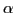

The Wilson-Dirac matrix is the discretized Dirac operator that describes fermions in quantum field theory. The parameter of interest in this matrix is the fermion mass parameter; the matrix becomes singular as this parameter is taken to zero. Solving such systems of linear equations at near zero fermion mass is the prevalent computational cost in lattice QCD calculations.
Although the matrix has a regular geometric structure, the random nature of the coefficients of the matrix results in the failure of naive multigrid approaches. A geometric adaptive multigrid algorithm based on adaptive smooth aggregation (SA) has been developed specifically for this matrix. Special consideration must be paid to the smoother used since the matrix is not Hermitian positive definite. The resulting algorithm exhibits very little dependence on the condition number of the matrix.